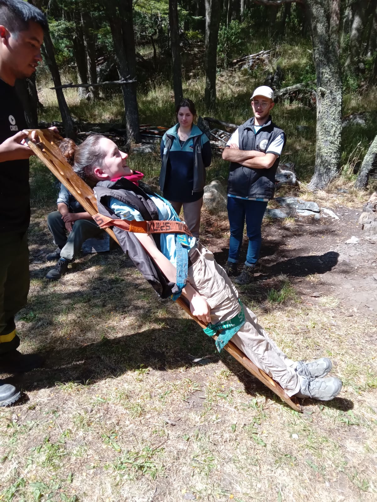
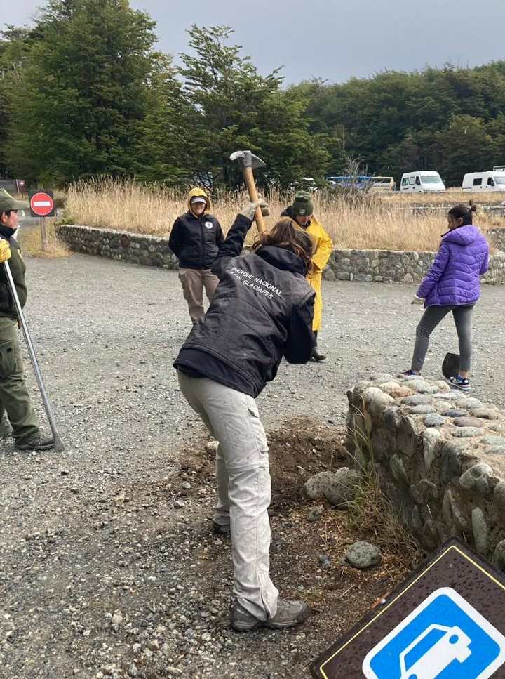
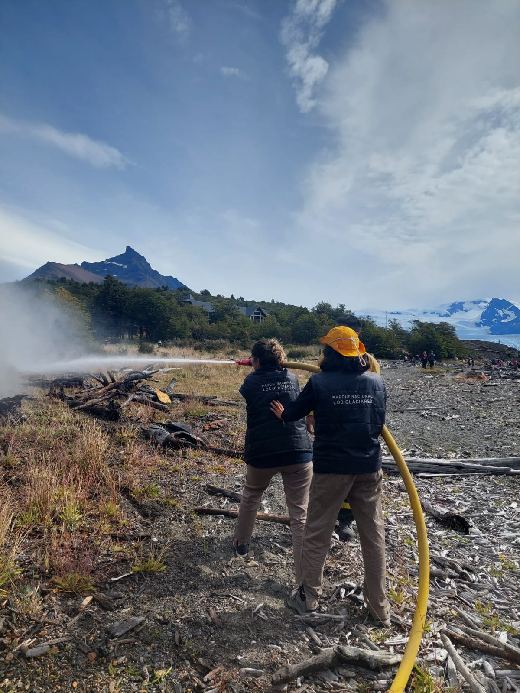

Preguntas Frecuentes
¿Cual es el objetivo del voluntariado?
El principal objetivo de este voluntariado es lograr incorporar en la comunidad, y en especial a los jóvenes, el sentido de pertenencia de las áreas protegidas acentuando el conocimiento sobre el medio ambiente. Esa pertenencia se acentúa (expresado por los mismos voluntarios) cuando, al final del período de prestación de servicios, pueden ver sus propios trabajos finalizados. Ello permite vivir directamente la experiencia que luego de mucha responsabilidad, llega la hora de la satisfacción por el esfuerzo realizado. La posibilidad de trabajar "desde" y "dentro" de la Institución, permite a los jóvenes conocer a fondo las bondades y los problemas propios de la misma, comprender sus limitaciones y los esfuerzos que se deben realizar diariamente, para poder conservar, proteger y administrar un área protegida de la complejidad del Parque Nacional Los Glaciares. Las actividades, muchas veces realizadas en condiciones de mínimo aislamiento, permite un obligado paso, para olvidar por algún tiempo, de toda la conectividad que hay a traves de los dispositivos electronicos. También es un excelente espacio para que los jóvenes aprendan a convivir y compartir con personas desconocidas, de distintas edades, gustos y personalidades diferentes y con experiencias disimiles. Ya que en general el destino cuenta con varios voluntarios y con más de un Guardaparque. Eso favorece al desarrollo de los conceptos de respeto y de saber ceder a la hora de querer imponer el parecer particular, siendo tolerante hasta en las situaciones problemáticas. Es decir que para muchos de ellos, se trata de un verdadero desafío y un ponerse a prueba ante las nuevas exigencias de la vida, además de disfrutar la mística que significa convivir con el ambiente natural.¿Que se hace en el voluntariado?
Durante el voluntariado se trabaja en conjunto con los Guardaparques en trabajos de mantenimiento (como colocar carteles, mantenimiento de senderos o trabajar en el taller aprendiendo a usar herramientas), atencion al publico, conservacion de la flora y fauna, entre otros. A veces tambien se trabaja junto a los brigadistas, recibiendo curso basico de primeros auxilios en el cual explican que hacer en ciertas situaciones peligrosas y ademas, enseñan a los voluntarios a armar y utilizar la manga para apagar incendios.



¿Tengo que estudiar la carrera de Guardaparque o algo relacionado a conservacion para participar?
No! Independientemente de la carrera que estudies o estudiaste, o del trabajo que tengas, podes postularte. Por ejemplo, se han recibido voluntarios que han estudiado medicina, negocios, profesorado de educacion fisica, turismo, entre muchos mas. La idea de estos voluntariados tambien es lograr que la sociedad se involucre con la naturaleza y su conservacion.¿Hay otros Parques Nacionales que reciban voluntarios?
Si! Hay muchos P.N que reciben voluntarios en diferentes epocas del año dependiendo de los recursos y disponibilidad que tenga. Hay que tener en cuenta que las instalaciones que presta cada Parque pueden variar, tambien como las tareas a realizar. Algunos de los Parques que reciben son:Para más información seras redirigido a la pagina del Ministerio de Ambiente y Desarrollo de la Nacion.